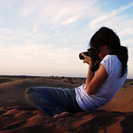
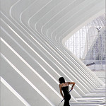
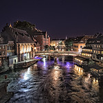

El arte de la fotografía está al alcance de todos, podemos utilizar
equipo especial como una cámara reflex digitales, o simplemente haciendo
uso de la cámara de nuestro teléfono móvil.
Tomar una buena foto no siempre depende del equipo utilizado, sino de
las que en gran medida será
por el correcto uso de: la elección del encuadre, la
iluminación de la escena, el tipo de plano seleccionado,
el momento del día y la composición según los objetos que
se incluyan.
Si eres aficionado a la fotografía, este sitio web es para tí, queremos
conocer sobre tu trabajo y ayudarte a mejorarlo con nuestros aportes
fotográficos y consejos para mejorar tus aptitudes de fotógrafo.”
| Fotografia | Autor | Descripccion | Enlace |
|---|---|---|---|
|  | Aguscruiz | La fantacia fotografa contorcionista | Fuente_Original |
|  | Manuel Holgado | Paisajes Verticales | Fuente_Original |
|  | Miguel Fabre | STRASBOURG AT NIGHT - ESTRASBURGO DE NOCHE | Fuente_Original | Fotos provistas por usuarios de Flicker |